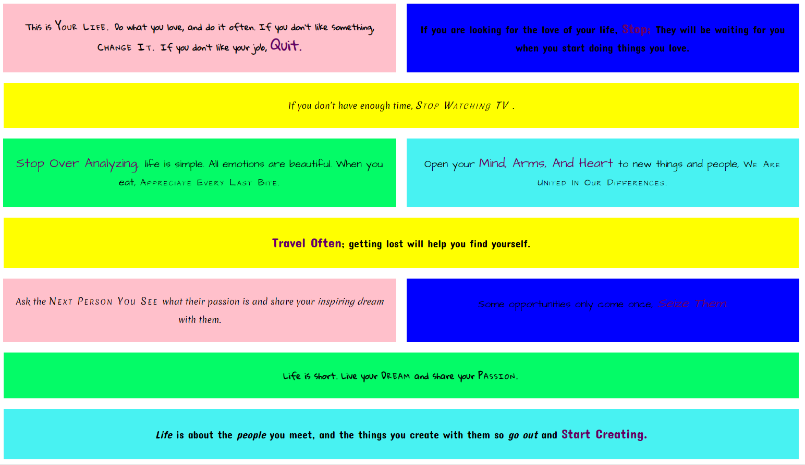

Holstee Manifesto
The Holstee Manifesto is an exercise in CSS and HTML completed during Skillcrush training. Initially the design used fixed widths but I later updated it to be mobile responsive using flexbox.
Jubilee Austen

The Jubilee Austen site is an exercise in creating a web page from a Photoshop design (PSD). This was originally completed using fixed widths but has now been updated to be responsive using media queries and variable column widths.
Rogue Pickings

The Rogue Pickings site is an exercise creating a web page from a Photoshop design (PSD). This was originally completed using fixed widths but I later updated it to be responsive using media queries and variable column widths.
Kids Ultimate Leicester

The Kids Ultimate Leicester site is an in-browser responsive design using flexbox.